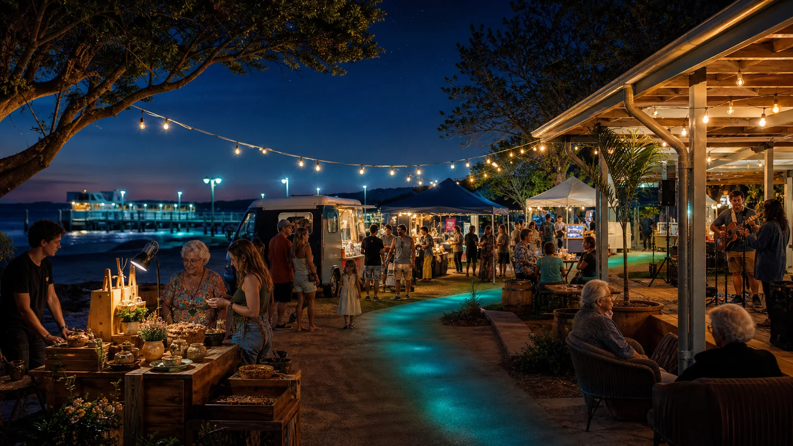

Maker row
Local goods, art, repair, small services and clear trader onboarding.

Night markets
Evening stalls, food, acoustic music, public notices and short screenings can make the hub useful before any grand festival talk. The market lane should be calm, local-first and easy to understand.
Why markets fit
Night markets give local makers, food providers, youth helpers, artists, musicians, clubs and visitors a reason to gather at the gateway. They also test the boring things that decide whether events survive: toilets, lighting, bins, pack-down, weather, parking, payments, transport and neighbour comfort.
Market formats
A market should be able to run as a tiny maker row, food-and-film night, wet-weather indoor table, sports-club fundraiser, youth showcase or ferry-arrival welcome without pretending every night is a headline event.
Local goods, art, repair, small services and clear trader onboarding.
Simple dinner trade before a low-noise outdoor film or community slideshow.
Fundraising stalls for sport, school, elder support, disaster readiness and youth programs.
Use the existing market workflow
The night-market lab already has a public workflow for stallholders, venues, transport checks and noticeboard records. This Ballow Road site should integrate that work, not duplicate it badly.